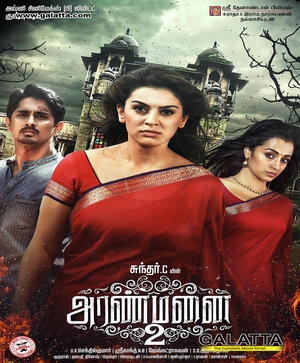

Trisha Krishnan (born 4 May 1983), known mononymously as Trisha, is an Indian actress who works predominantly in Tamil and Telugu films. She gained prominence after winning the 1999 Miss Chennai pageant, which marked her entry into Cinema. Often referred to as the "Queen of South India", Trisha has received numerous accolades, including five Filmfare Award South, one Tamil Nadu State Film Award, one Nandi Award and eight SIIMA Awards.
 |
 |